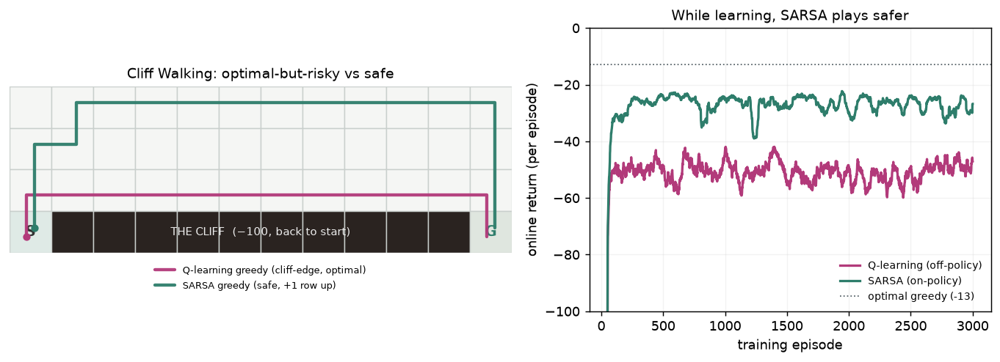

One MDP — Sutton & Barto's Cliff Walking (a 4×12 grid with a −100 cliff along the bottom edge between start and goal) — solved four ways, from model-based dynamic programming down to model-free Monte-Carlo. Each is really trained; each shows the classic tradeoff: optimal-but-risky vs safe, model-based vs model-free, and what exploration costs while you learn.
The rule that runs through the family: on-policy vs off-policy is a safety choice made while learning. Q-learning (off-policy) learns the OPTIMAL greedy policy — the risky path right along the cliff edge — but its exploring behaviour keeps falling off, so its return during training is worse. SARSA (on-policy) learns the value of the exploring policy it actually follows, so it walks a safer path one row up and earns more while it learns. Value iteration needs the model and gives the exact optimum; Monte-Carlo needs no model but pays in samples and variance.

| method | greedy policy (after training) | behaviour while learning |
|---|---|---|
| Value iteration model-based · dynamic programming | ✓ optimal −13 (cliff-edge) | — needs the model, no exploration |
| Q-learning model-free · off-policy TD | ✓ optimal −13 (cliff-edge, 10/10 seeds) | ✗ online −52 (falls off a lot) |
| SARSA model-free · on-policy TD | ✓ safe −17 (one row up, 10/10 seeds) | ✓ online −28 (+24 vs Q-learning) |
| Monte-Carlo control model-free · every-visit returns | ✗ solved only 3/10 seeds | ✗ online −653, huge variance |
Sweep the Bellman optimality backup over every state using the KNOWN transition model, until the value function stops changing. No experience, no sampling — it computes the exact optimal value and policy directly.
Converges in 15 sweeps to the exact optimum: greedy return −13 along a 13-step path that hugs the cliff edge — the reference every learner is judged against.
Learn from experience with the off-policy TD update: bootstrap toward r + γ·maxa Q(s′,a) — the value of the BEST next action, regardless of what the exploring policy actually did. So it learns the optimal greedy policy while still exploring with ε-greedy.
Its greedy policy converges to the optimal cliff-edge path (return −13, identical to value iteration, in all 10/10 seeds). But because that optimum runs along the edge, its ε-greedy behaviour keeps stepping off: mean online return while training is only −51.9.
The on-policy TD update: bootstrap toward r + γ·Q(s′,a′) where a′ is the action the ε-greedy policy will ACTUALLY take next. So it learns the value of the exploring policy it follows — cliff-falls and all.
Because exploration near the cliff carries a real −100 cost in the values it learns, it prefers a safe path one row up: greedy return −17 (a bit longer than optimal), but mean online return while training is −28.4 — +23.5 higher than Q-learning's.
No bootstrapping and no model: play a whole episode, then average the FULL observed return back onto every state-action pair visited (every-visit, ε-greedy control). Each update waits for the episode to end.
It works in principle but is sample-hungry and high-variance here: at the same 3000-episode budget its greedy policy reaches the goal in only 3/10 seeds, online return is −653, and the across-seed spread is enormous (tail std 461 vs <3.2 for the TD methods).
scripts/rl_zoo_experiments.py, pure NumPy) — 4×12 grid, −1 per step, −100 and teleport-to-start for the cliff, episode ends at the goal. Value iteration uses the full transition model; Q-learning, SARSA and Monte-Carlo each train for 3000 episodes at α=0.5, ε=0.1, γ=1, averaged over 10 seeds. Every number and the figure come straight from that run, which VERIFIES the classic result: Q-learning's greedy path is optimal (−13, identical to value iteration) yet its online training return (−52) is worse than SARSA's (−28).